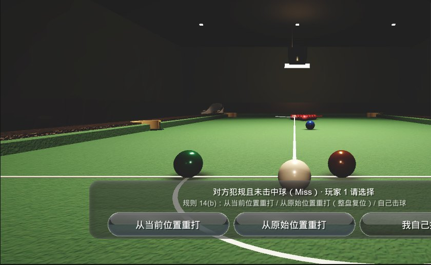
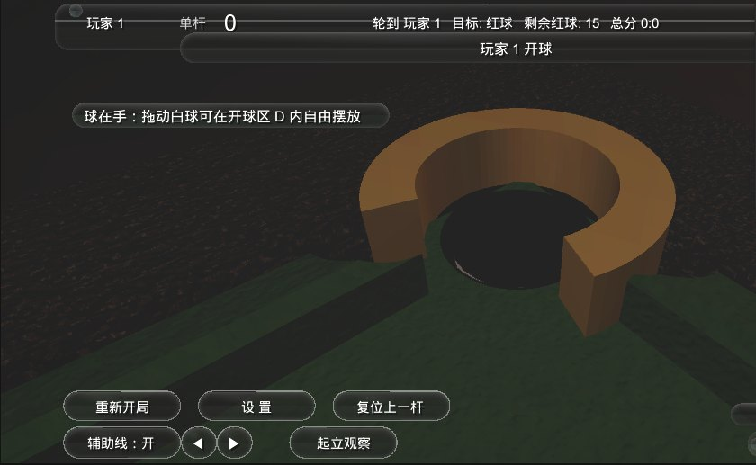
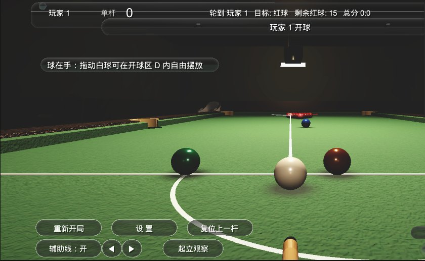
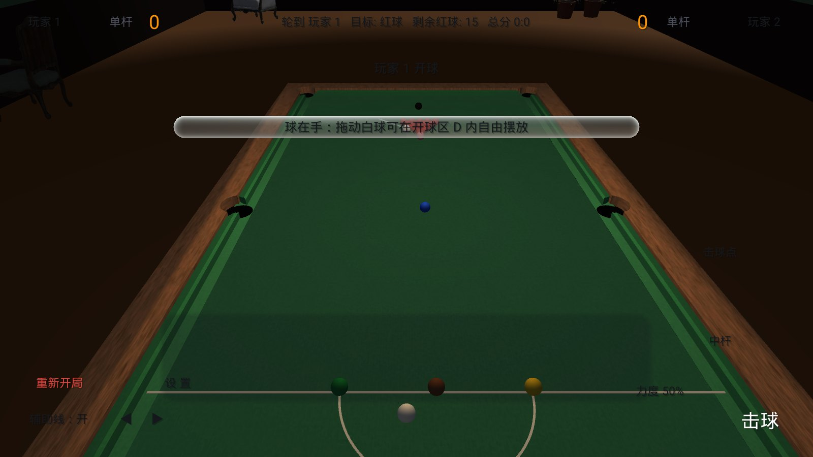
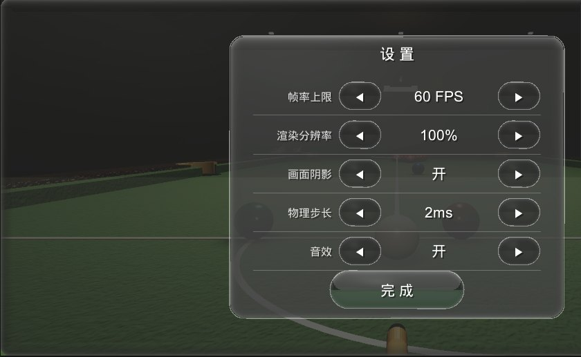
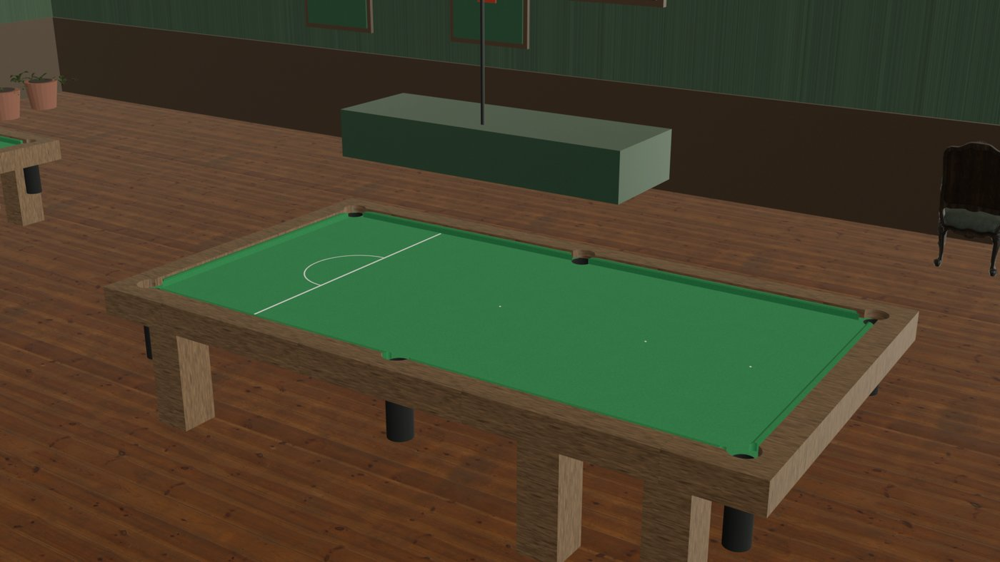

FEATURES
每一项特性都对应一次验收：规则走 65 条断言，物理走四道回归，画面走 ShotTest 十七帧。 这一页把六个词展开——它们不是宣传语，是开发记录。

规则引擎 SnookerRules.cs 是纯函数：不碰物理、不碰 UI，输入台面状态与一杆事实，输出判罚结果。WPBSA 2024-25 条款全量落地——Miss 三选一（Rule 14(b)）由非犯规方选择、自由球、复位三选一、犯规门禁。
65 条断言守着它。任何一次改动，回归不过就不出门。

2ms 可调物理步长、滚动摩擦 0.11、停判阈值 0.09。袋口是 v0.41 起逐步变"真"的：颚弧与鼻线相切、台呢上挖出真洞、晃袋（rattle）、PocketLaunchGuard 钳住袋口弹射。
白球加塞不靠物理引擎猜——自建滑移摩擦模型，三条硬约束定死，中杆（spinV=spinH=0）必须与旧版逐帧一致，这是加塞正确性的第一道关。

眼高 0.11m 的俯身机位（参照 PCOL 反编译参数换算）、一键起立俯瞰全台、程序化梯形灯箱吊灯、主桌主光 + 无影补光 + 四壁洗墙，最后过一遍全屏 ACES 调色链。
对参考站 PCOL 只复刻技法与参数——一个模型、一张贴图都没有拷。这个项目是 MIT 开源的，法律边界在第一行就写清楚。

一台手机平放在桌上，两个人一人一边。轮流击球、单杆分、剩余红球、147 满分提示、最高单杆、胜利结算动画与号角。
没有联机、没有账号、没有广告。它只做一件事：让两个人围着一张 3569×1778mm 的数字球台打完一整局。

磨砂玻璃面板、边缘拉丝、Q 弹动画、全白字体。玻璃不是贴图——是零贴图顶点网格直接画出来的，因为"运行时创建的 UI 贴图在真机上不可靠"（踩坑 #4）。
绿色闪烁、黑色圆角阴影、轮廓幽灵——这三个 bug 各自写进了踩坑清单，也都死在了 v0.56。

三张球台、PCOL 式吊灯、墙裙、记分牌、挂钟、海报、球杆架、座椅、盆栽——全部程序化生成，没有一件外部资产。
整个游戏只有一条音效：胜利号角。它只需要在赢的时候响。